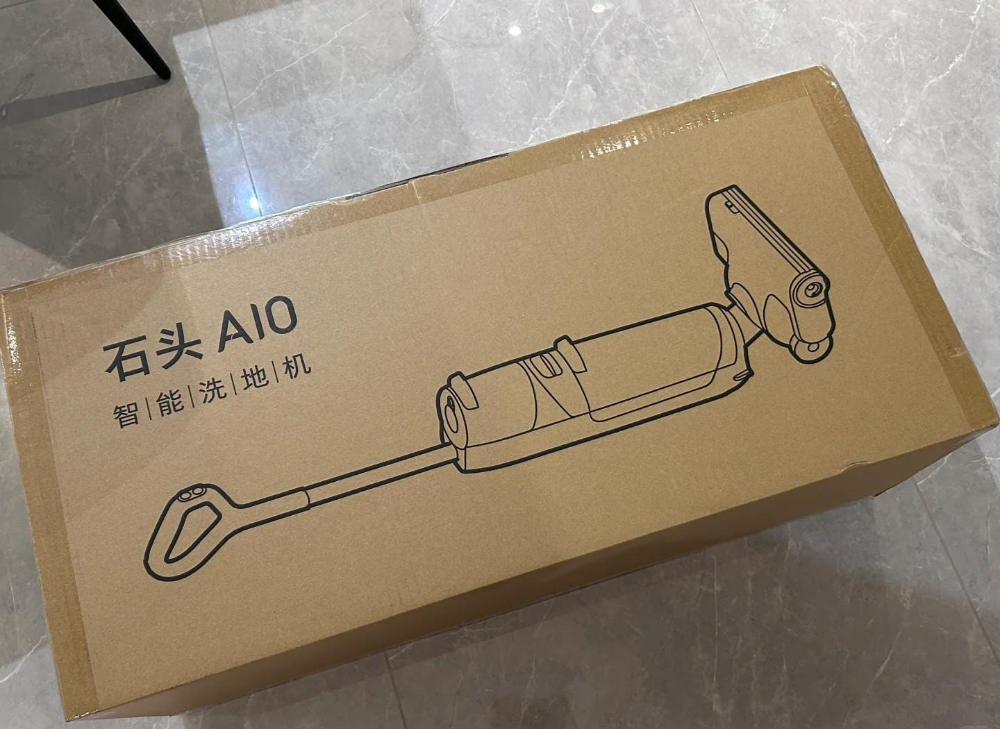

石头 A20 洗地机

石头科技切入洗地机市场的走量之作，约 17000Pa 吸力配合防缠绕梳齿滚刷，毛发不易缠绕。机身可大幅躺平深入沙发与床底，自清洁后热风烘干滚刷，以两千元档的价格给出完整体验，性价比路线清晰。
客观评测
石头 A20 以约 17000Pa 吸力搭配梳齿防缠绕滚刷，主打毛发家庭与低矮空间清洁。实测长发与宠物毛发缠绕明显少于普通滚刷，墙边贴边清洁残留较少，机身躺平后可进入多数沙发与床底。约 35 分钟续航与 0.78L 清水箱对中小户型够用，自清洁后热风烘干能保持滚刷干爽。整体配置对得起价格，是两千元档洗地机中完成度较高的选择。
主观点评
家里有猫有长发，以前每次拖完地都要蹲下来抠滚刷上的头发，换它之后这个步骤基本消失了，光这一点就值回票价。能躺平进床底也很实用，以前常年积灰的地方终于推得到。它当然有妥协：水箱不大、续航一般，但看看价格，这些都可以忍。作为石头的第一波洗地机，完成度超出预期。
优点与不足
- 梳齿防缠绕结构，长发用户不用再剪滚刷上的头发
- 机身可躺平，沙发与床底清洁不再是难题
- 两千元档给到烘干自清洁，配置诚意足
- 水箱与续航偏小，大户型需中途加水
- 品牌在洗地机领域较新，长期耐用性有待观察
参数规格
| 类型 | 无线洗地机 |
|---|---|
| 吸力 | 约 17000 Pa |
| 滚刷 | 双侧贴边滚刷 + 梳齿防缠绕结构 |
| 清水箱 | 约 0.78 L |
| 污水箱 | 约 0.62 L |
| 续航 | 约 35 分钟 |
| 充电 | 约 4 小时充满 |
| 自清洁 | 自清洁 + 热风烘干滚刷 |
| 躺平清洁 | 机身可大幅躺平，深入沙发与床底 |
| 噪音 | 约 76 dB(A)（约） |
| 重量 | 约 4.3 kg（约） |
| 配件 | 备用滚刷、清洁液、充电底座 |